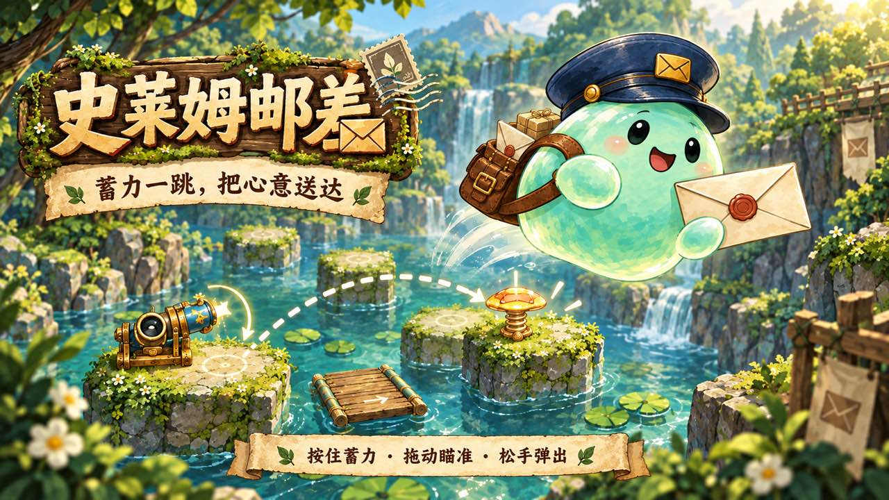
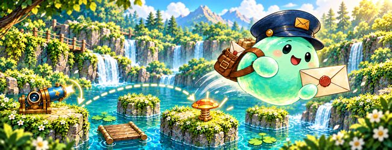
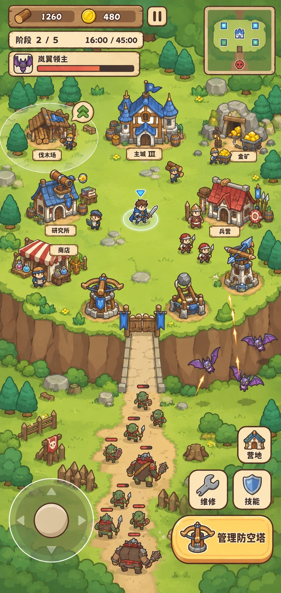
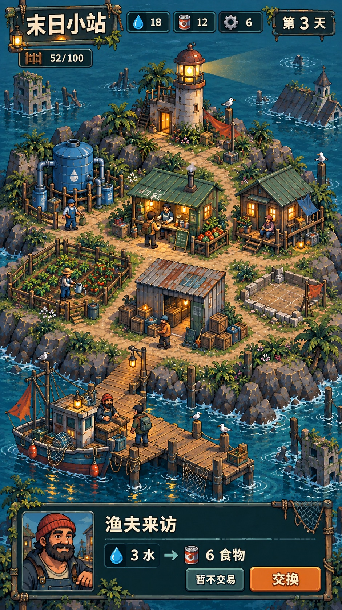
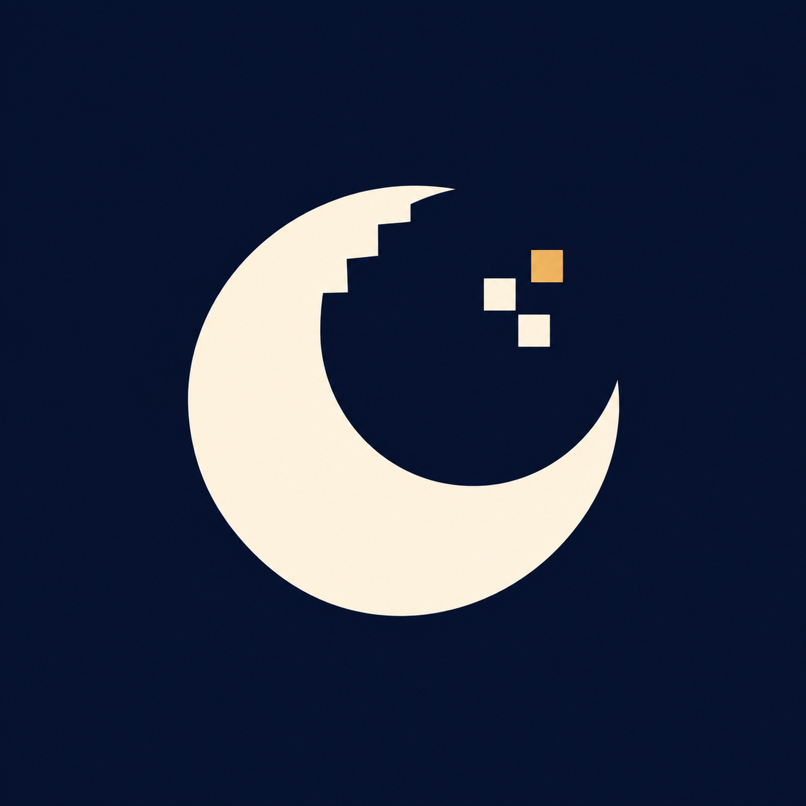

宣传插画史莱姆邮差
SLIME POST
蓄力一跳，把心意送达。和小邮差一起穿过森林、沼泽与雪谷，让每一封信找到等待它的人。
展开游戏介绍
按住蓄力、拖动瞄准、松手弹出。在弹台、风芽、炮台与冰面之间寻找下一处落点，抵达收件处后，收下一封回信。
已上线微信小游戏。六章、共 60 关，从青苔邮路一路走到熔光工坊。每一站都有新的机关与等待送达的心意。

01 / 把心意送达 ↗
02 / 守住小小的家 ↗
03 / 把灯留下 ↗ three little worlds, made with care01 — OUR LITTLE WORLDS
从一段邮路，到一座小岛。
每个世界，都有自己的心跳。

宣传插画SLIME POST
蓄力一跳，把心意送达。和小邮差一起穿过森林、沼泽与雪谷，让每一封信找到等待它的人。
按住蓄力、拖动瞄准、松手弹出。在弹台、风芽、炮台与冰面之间寻找下一处落点，抵达收件处后，收下一封回信。
已上线微信小游戏。六章、共 60 关，从青苔邮路一路走到熔光工坊。每一站都有新的机关与等待送达的心意。
ISLAND GUARD
从一片高地开始，采集、建设、布置防线。让营地一点点长大，也让每一次坚守都有了意义。
发展木材与金币经济，升级主城，自由摆放防御塔，用连续的门墙守住入口。面对不同敌人，试着找到属于自己的防守节奏。
当前开发版本以高地建造与防守为核心。小岛世界观与人物故事正在完善，页面展示为美术概念。
LAST STOP ISLAND
白天迎接来船，经营海岛上的补给站；夜晚守住营地。在不太温柔的世界里，把这一盏灯留下。
在栖灯岛招募居民、安排生产、扩建营地。白天接收来船、积累物资，夜晚由守卫与炮台抵御威胁。
一款开发中的竖屏像素经营游戏。页面展示为早期视觉概念，最终场景与功能以正式发布版本为准。
《小岛守卫战》和《末日小岛模拟器》仍在开发中，敬请期待。宣传插画与概念图不代表最终实机画面。
02 — THE STUDIO BEHIND THE GAMES

A LITTLE MOON.一个专注小游戏的独立工作室。
在 ShiYue，我们喜欢把代码、画面和一点点故事放在一起，让一个念头慢慢变成可以游玩的世界。
这里有努力送信的史莱姆，有从零建起的营地，也有在夜色里亮着灯的小岛。我们想做的，是让你愿意多停留一会儿的游戏。
03 — SAY HELLO
如果你也喜欢这些小世界，欢迎来看看我们正在做什么。